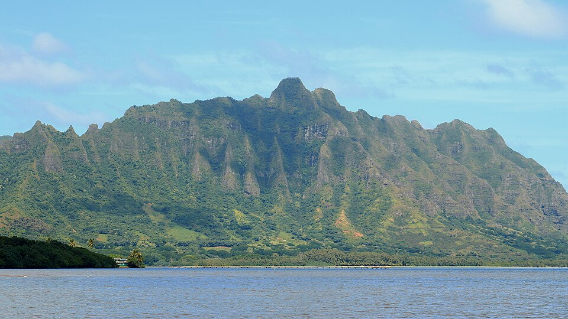

Kualoa
Place: Kualoa, Oʻahu
Type: Ahupuaʻa / valley / cultural landscape
Story it tells: A sacred windward landscape where Hawaiian tradition, chiefly history, mythology, ranching, and modern film culture intersect beneath the cliffs of Koʻolau.

Kualoa is a historic ahupuaʻa on the windward coast of Oʻahu known for its dramatic cliffs, sacred traditions, and modern association with film and tourism. The name is often translated as “long back” or “long ridge,” likely referring to the steep ridges rising behind the coast. Today, the broader landscape includes Kualoa Regional Park, Kualoa Valley, fishponds along Kāneʻohe Bay, and nearby Mokoliʻi (widely referenced as Chinaman's Hat), one of Hawaiʻi’s most recognizable offshore islets.
In Hawaiian tradition, Kualoa was considered one of the most sacred places on Oʻahu. Oral traditions connect the area to Haloa, the ancestor of the Hawaiian people and the kalo plant, while nearby Mokoliʻi and the Hakipuʻu shoreline are associated with stories of a slain moʻo whose body became part of the landscape. The imagery of the moʻo’s spine may also connect to the meaning of Kualoa itself. Young chiefs were trained here in warfare and governance, and places of refuge existed within the broader ahupuaʻa. In the late 18th century, Maui chief Kahekili sought control of Kualoa because of its political and sacred importance, reflecting how closely the area was tied to ideas of sovereignty and chiefly power on Oʻahu.
Western influence expanded into the area during the mid 19th century. In 1850, Dr. Gerrit P. Judd acquired portions of Kualoa from King Kamehameha III, and later generations of the family developed the property into a ranching operation that evolved into modern Kualoa Ranch. During World War II, the area was occupied by the U.S. military and used as Kualoa Airfield before returning to private ownership after the war.
In more recent decades, Kualoa became internationally recognizable through films and television series such as Jurassic Park, Lost, and Hawaii Five-0. Despite this global visibility, the landscape itself remains central to Kualoa’s identity. The steep ridges, offshore islands, fishponds, and stories tied to the land continue to shape how many people understand the area today.